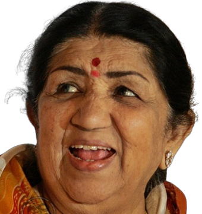

1929-2022
As a singer, you have to bring the soul to the song. - Lata Mangeshkar
Lata Mangeshkar was born in Indore on September 28, 1929, and became, quite simply, the most popular playback singer in Bollywood's history. She sung for over 50 years for actresses from Nargis to Preity G Zinta, as well as recorded albums of all kinds (ghazals, pop, etc). Until the 1991 edition, when her entry disappeared, the Guinness Book of World Records listed her as the most-recorded artist in the world with not less than 30,000 solo, duet,and chorus-backed songs recorded in 20 Indian languages between 948 and 1987. Today that number may have reached 40,000!